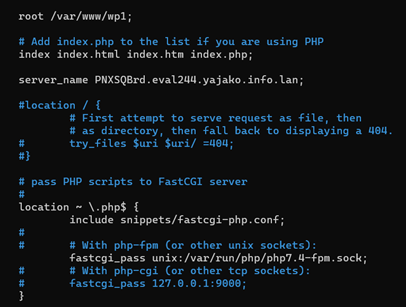
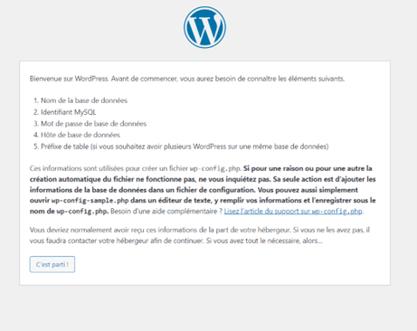

Installation wordpress avec nginx
Grâce à cette procédure vous allez pouvoir à partir d’une Debian 11 vierge, héberger et créer votre site web WordPress via le serveur web Nginx. Il faut savoir que grâce à cette procédure nous allons utiliser mariaDB server qui sera le serveur hébergeant notre base de données, mariaDB client pour intéragir avec notre serveur, Php pour le langage qui gère le site web, et php-fpm qui gère le php pour nginx.
Nous avons besoin de certains pré requis :
La partie base de données
Configuration nginx On remplit la configuration de la même manière que le screen ci-dessous nano /etc/nginx/sites-enabled/wordpress
On fait ensuite systemctl reload (ou restart) nginx.service Puis on tape l'url que l'on a mis dans le fichier de conf nginx dans le navigateur
On passe ensuite à l'installation de wordpress via le navigateur :
Etape 1 cliquer sur "c'est parti!"
Etape 2 Remplir les champs que l'on a créé dans la base de données
Etape 3 Lancer l'installation
Etape 5 Entrer les informations que vous voulez avec un mot de passe sécurisé
Etape 6 Cliquer sur se connecter
Etape 7 Se connecter avec les identifiants précédemment créés
Fin de l'installation